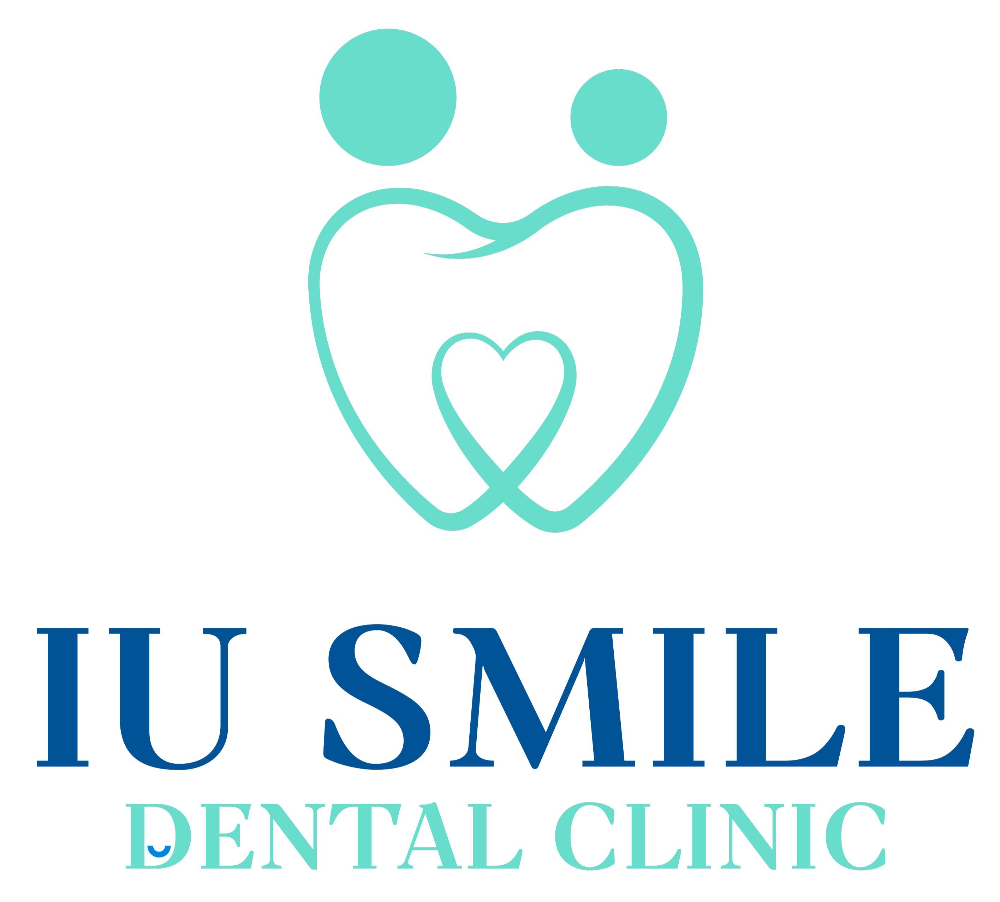
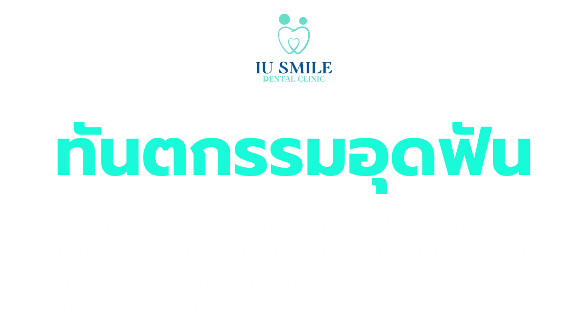
นัดหมายปรึกษา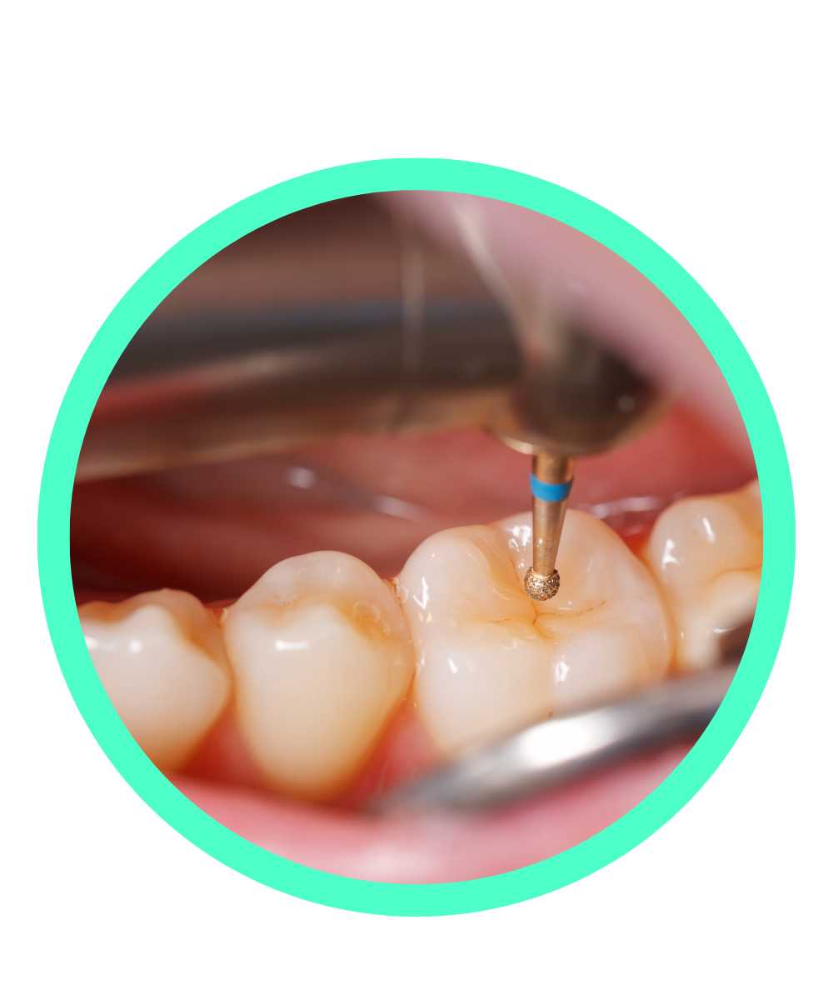
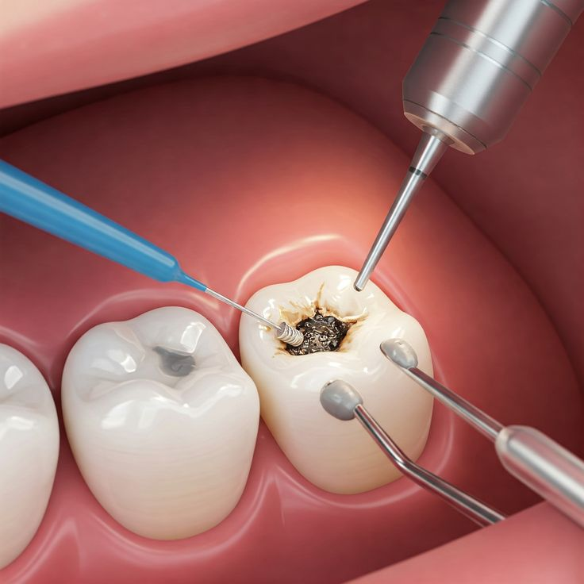
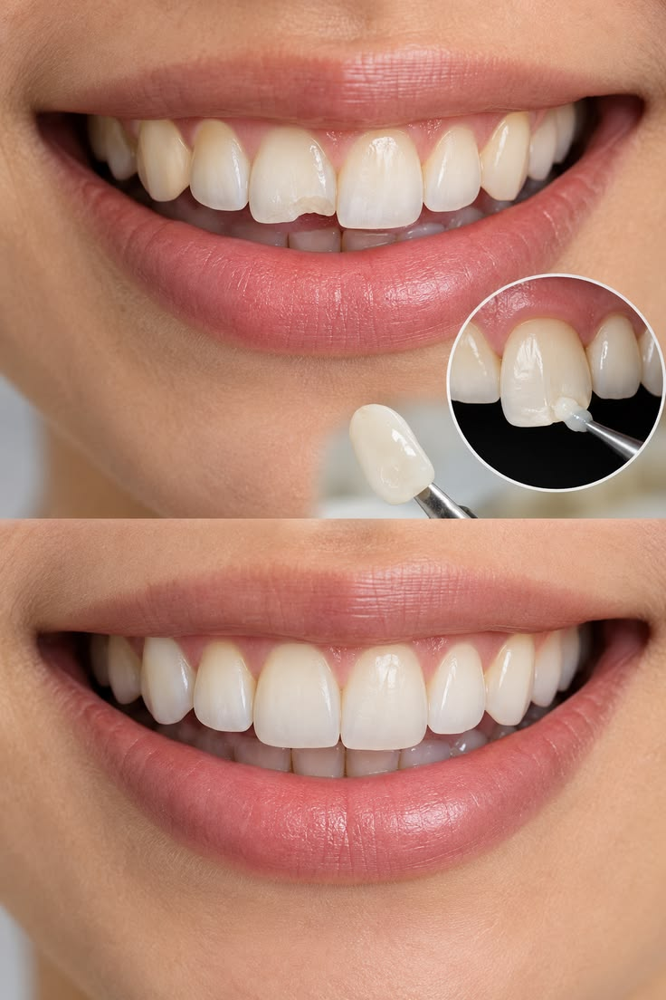
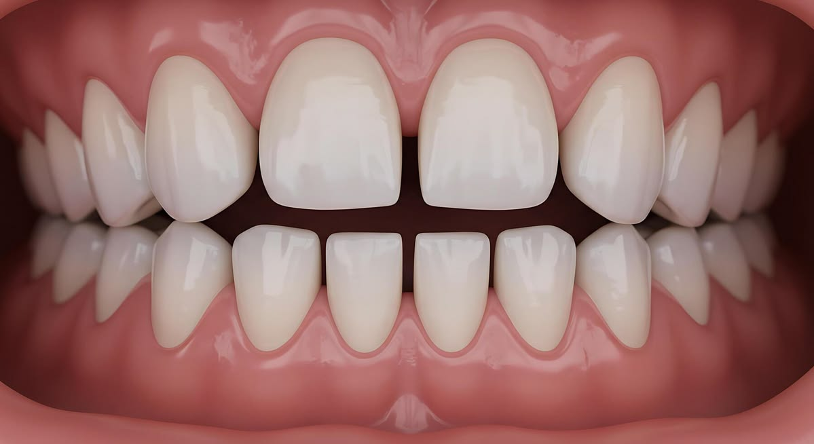
ในช่วง 1-2 วันแรก อาจมีอาการเสียวฟันเวลาเคี้ยวหรือโดนของเย็นได้เล็กน้อย เนื่องจากเนื้อฟันเพิ่งผ่านการรักษา แต่ถ้าอาการเสียวฟันไม่ดีขึ้น หรือปวดตุบๆ เวลาเคี้ยว ให้กลับมาพบทันตแพทย์เพื่อเช็กระดับการสบฟันอีกครั้ง
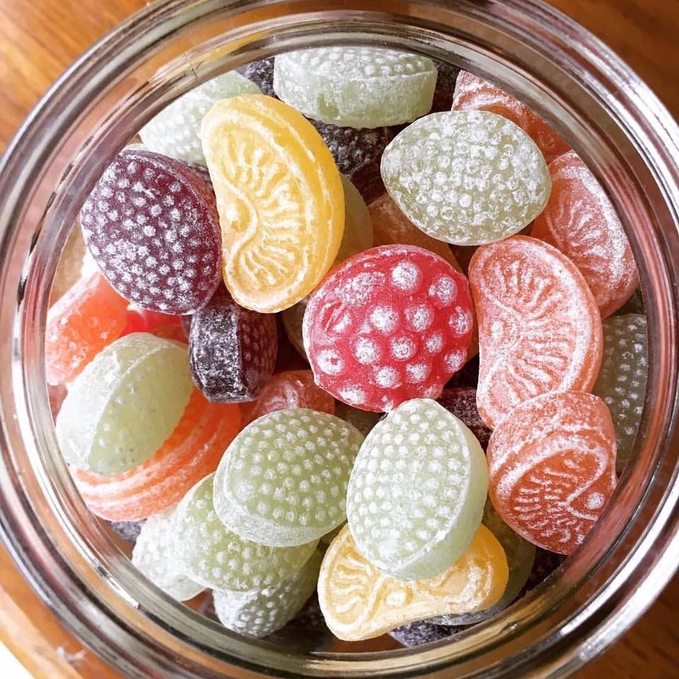
หลีกเลี่ยงการเคี้ยวอาหารแข็งๆ หรือของเหนียว (เช่น ลูกอมเคี้ยวหนึบ น้ำแข็ง ถั่ว) ด้วยซี่ที่เพิ่งอุดไป เพื่อป้องกันวัสดุอุดแตกหรือหลุด และหากใช้วัสดุอุดสีเหมือนฟัน (คอมโพสิต) ในช่วงแรกควรระวังอาหารที่มีสีเข้มจัด (เช่น ชา กาแฟ แกงเหลือง) เพื่อลดคราบติดผิววัสดุ
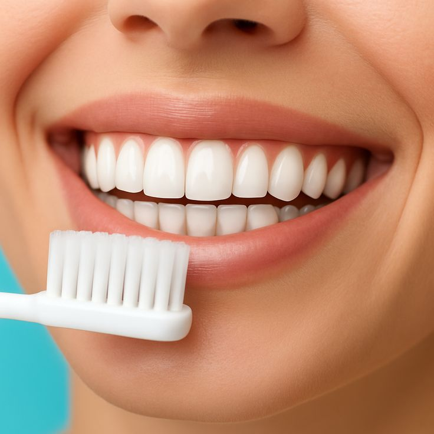
สามารถแปรงฟันได้ตามปกติ แต่ให้ใช้ไหมขัดฟันด้วยความระมัดระวังบริเวณซอกฟันที่เพิ่งอุด (ใช้วิธีดึงไหมออกด้านข้างแทนการดึงขึ้นตรงๆ เพื่อไม่ให้เกี่ยววัสดุอุดหลุด)
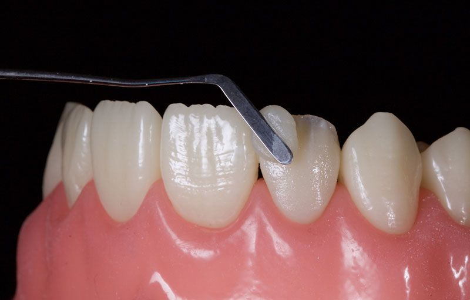
วัสดุอุดฟันไม่ได้อยู่คงทนถาวรตลอดชีวิต อาจมีการสึกหรอ เสื่อมสภาพ หรือเกิดรอยรั่วซึมบริเวณขอบได้ตามกาลเวลา (โดยเฉลี่ยประมาณ 5-10 ปีขึ้นอยู่กับการใช้งาน) หากรู้สึกว่าวัสดุมีรอยบิ่น ขรุขระ หรือเคี้ยวแล้วเจ็บ ควรมาให้ทันตแพทย์ตรวจเช็กและเปลี่ยนใหม่
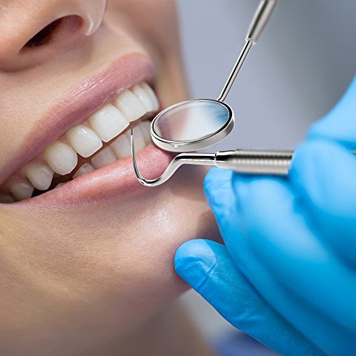
มาพบทันตแพทย์ตามนัดหมายประจำปี เพื่อตรวจดูว่าวัสดุอุดยังแน่นหนาดีอยู่ไหม และป้องกันไม่ให้เกิดฟันผุใหม่ซ้ำบริเวณเดิมครับ
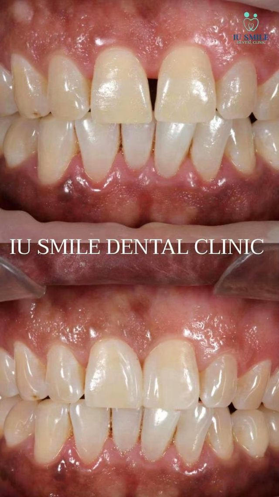
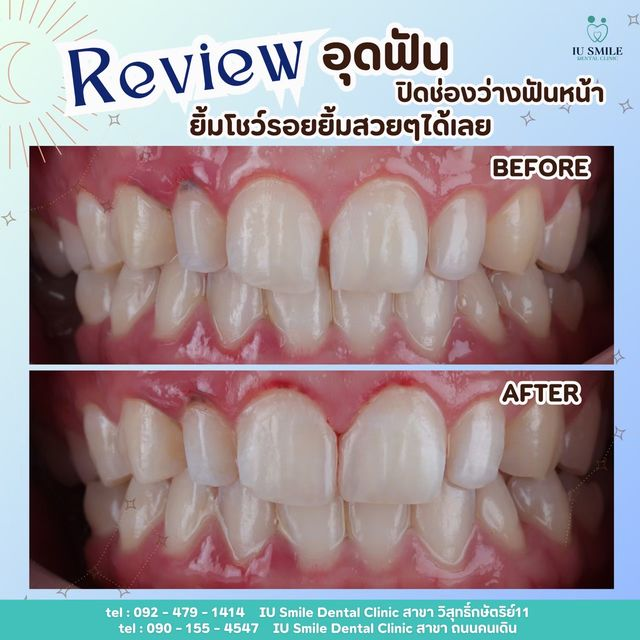
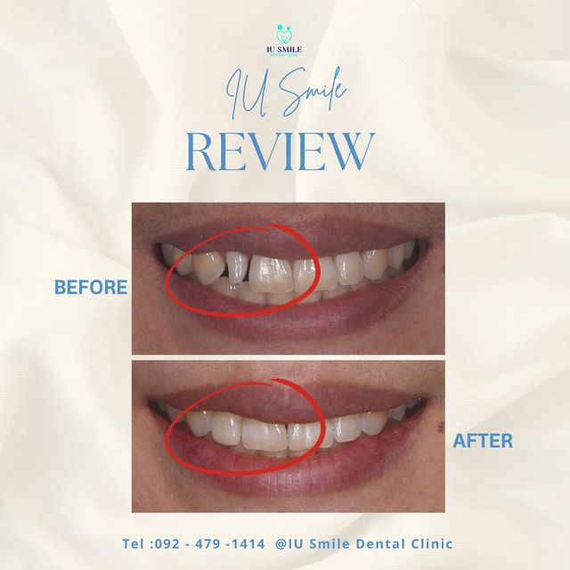
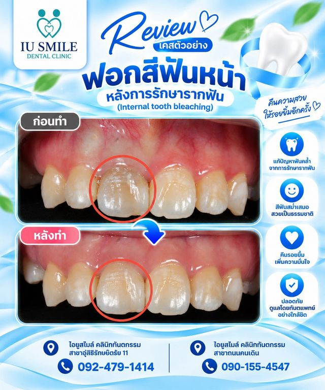
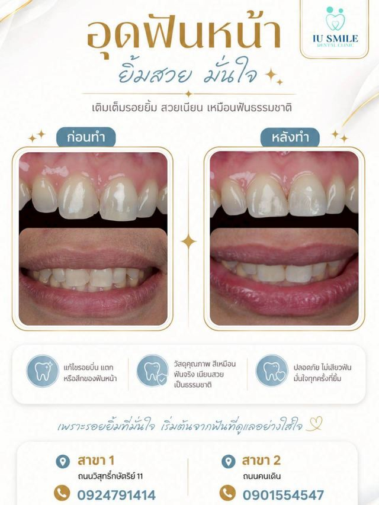
สิทธิบัตรทอง
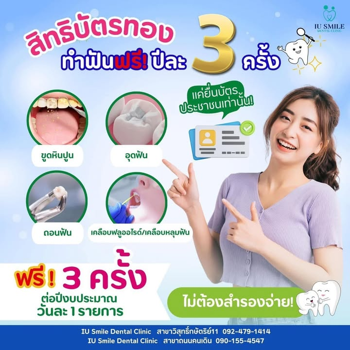
สิทธิประกันสังคม
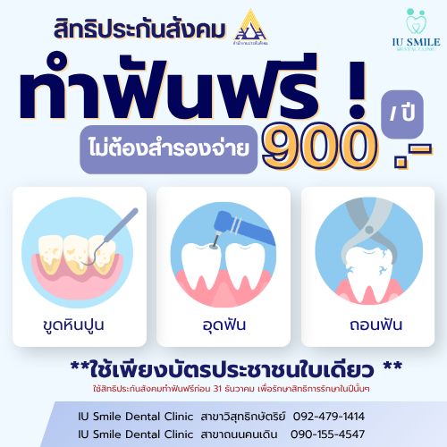